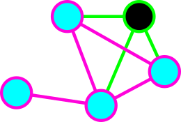

Shapes of Hermitian matrices and topology of the corresponding isospectral manifolds
Anton Ayzenberg ayzenberga@gmail.com
Algebraic topology, combinatorics, and mathematical physics.
Sochi, SMC, 2023
based on joint works with
 |
 |
 |
||
| V.Buchstaber | V.Cherepanov | M.Masuda | G.Solomadin | K.Sorokin |
Graphs and matrix shapes.
- $\Gamma$ : a graph with vertex set $[n]=\{1,\ldots,n\}$ and edge set $E_\Gamma$.
- $M_n$ : the set of all Hermitian matrices of size $n$.
- $A\in M_n$ is called $\Gamma$-shaped if $a_{i,j}=0$ for $\{i,j\}\notin E_\Gamma$.
- $M_\Gamma$ : the set of all $\Gamma$-shaped matrices
 |
$\Rightarrow$ | \[ \begin{pmatrix} \ast & \ast & \ast & \ast \\ \ast & \ast & & \\ \ast & & \ast & \\ \ast & & & \ast \end{pmatrix} \] |
| Star graph | Arrowhead matrix |
| $\Rightarrow$ | \[ \begin{pmatrix} \ast & \ast & \ast & \ast \\ \ast & \ast & \ast & \ast \\ \ast & \ast & \ast & \ast \\ \ast & \ast & \ast & \ast \end{pmatrix} \] | |
| Full graph | Full matrix |
 |
$\Rightarrow$ | \[ \begin{pmatrix} \ast & \ast & & \\ \ast & \ast & \ast & \\ & \ast & \ast & \ast \\ & & \ast & \ast \end{pmatrix} \] |
| Path graph | Tridiagonal matrix |
 |
$\Rightarrow$ | \[ \begin{pmatrix} \ast & \ast & & & \ast\\ \ast & \ast & \ast & & \\ & \ast & \ast & \ast & \\ & & \ast & \ast & \ast \\ \ast & & & \ast & \ast \end{pmatrix} \] |
| Cycle graph | Periodic tridiag- onal matrix |
Graphs and matrix shapes.
|
$\Rightarrow$ | \[ \begin{pmatrix} \ast & \ast & & & \ast\\ \ast & \ast & \ast & & \\ & \ast & \ast & \ast & \\ & & \ast & \ast & \ast \\ \ast & & & \ast & \ast \end{pmatrix} \] | |
$\Rightarrow$ | \[ \begin{pmatrix} \ast & \ast & \ast & \ast \\ \ast & \ast & & \\ \ast & & \ast & \\ \ast & & & \ast \end{pmatrix} \] |
- $\lambda=(\lambda_1<\cdots<\lambda_n)$ : a simple spectrum.
- $M_\lambda$ : the set of all matrices with spectrum $\lambda$.
- $M_{\Gamma,\lambda}=M_\Gamma\cap M_\lambda$ : the set of all $\Gamma$-shaped matrices with spectrum $\lambda$.
- If $\lambda$ is generic, then $M_{\Gamma,\lambda}$ is a smooth closed manifold (follows from Sard's lemma).
- $\dim M_{\Gamma,\lambda}=2|E_\Gamma|$.
Torus action on matrices:
- Unitary group $U(n)$ acts on $M_n$ by conjugation. It preserves the spectrum.
- Let $T\subset U(n)$ be the torus of diagonal matrices. We have induced $T$-action on $M_\lambda$.
|
This is a torus.
Move cursor to pick an element and act on a matrix! |
$\circlearrowright$ |
|
|||||||||
| [edit] |
- $T$-action on $M_\lambda$ preserves $\Gamma$-shape for any graph $\Gamma$.
- Therefore, the torus $T$ acts on $M_{\Gamma,\lambda}$.
We are interested in toric topology of $M_{\Gamma,\lambda}$
Torus actions. General notions:
- $T$ : compact torus.
- $T$ acts smoothly (and effectively) on a smooth manifold $X$.
- $X^T$ : the set of $T$-fixed points . It is assumed finite and nonempty.
- $X_T=X\times_TET$ : Borel construction;
- $p\colon X_T\stackrel{X}{\to} BT$ : Serre fibration;
- $H^*_T(X)=H^*(X_T)$ : equivariant cohomology module;
- $E_2^{p,q}\cong H^p(BT)\otimes H^q(X)\Rightarrow H^{p+q}_T(X)$ : Serre spectral sequence.
Definition: $X$ is called equivariantly formal if its Serre spectral sequence degenerates at $E_2$.
Torus actions. General notions:
- $E_2^{p,q}\cong H^p(BT)\otimes H^q(X)\Rightarrow H^{p+q}_T(X)$ : Serre spectral sequence.
Definition: $X$ is called equivariantly formal if its Serre spectral sequence degenerates at $E_2$.
Equivalently (fixed points are isolated): Equivariant formality $\Leftrightarrow$ $H^{odd}(X)=0$.
Problem for today: which manifolds $M_{\Gamma,\lambda}$ are equiavariantly formal?
Examples: full matrices
| $\Rightarrow$ | \[ \begin{pmatrix} \ast & \ast & \ast & \ast \\ \ast & \ast & \ast & \ast \\ \ast & \ast & \ast & \ast \\ \ast & \ast & \ast & \ast \end{pmatrix} \] | |
| Full graph | Full matrix |
- Full graph corresponds to the manifold $M_\lambda$ itself.
- $U(n)$ acts transitively on $M_\lambda$ with stabilizer $T^n$.
- Hence $M_\lambda\cong U(n)/T=Fl_n$, the full flag variety.
- It is equivariantly formal.
Examples: tridiagonal
|
$\Rightarrow$ | \[ \begin{pmatrix} \ast & \ast & & \\ \ast & \ast & \ast & \\ & \ast & \ast & \ast \\ & & \ast & \ast \end{pmatrix} \] |
| Path graph $\mathbb{I}_n$ | Tridiagonal matrix |
- Path graph corresponds to tridiagonal matrices.
- The manifold $M_{\mathbb{I}_n,\lambda}$ was introduced and studied by Tomei'84.
- Tomei proved that $M_{\mathbb{I}_n,\lambda}/T$ is a permutohedron.
- In modern terminology, $M_{\mathbb{I}_n,\lambda}$ is a quasitoric manifold over permutohedron.
- $M_{\mathbb{I}_n,\lambda}$ is equivariantly formal.
Examples: staircase
| $\Rightarrow$ | \[ \begin{pmatrix} \ast & \ast & \ast & & \\ \ast & \ast & \ast & \ast & \\ \ast & \ast & \ast & \ast & \\ & \ast & \ast & \ast & \ast \\ & & & \ast & \ast \\ \end{pmatrix} \] |
- Spaces like $M_{\Gamma,\lambda}$ appeared in the literature (de Mari, etc.)
- A.-Buchtaber'21 noticed that $M_{\Gamma,\lambda}$ shares many common properties with corresponding regular semisimple Hessenberg varieties. We called them twins.
- Using Morse theory, we proved that $M_{\Gamma,\lambda}$ admits even-dimensional cell structure.
- Hence $M_{\Gamma,\lambda}$ is equivariantly formal.
Examples: arrowhead
|
$\Rightarrow$ | \[ \begin{pmatrix} \ast & \ast & \ast & \ast \\ \ast & \ast & & \\ \ast & & \ast & \\ \ast & & & \ast \end{pmatrix} \] |
| Star graph $St_n$ | Arrowhead matrix |
- Torus action has complexity $0$. This is a torus manifold.
|
Theorem (Gal-Januszkiewicz, unpublished):
$M_{St_3,\lambda}/T$ is a solid torus with boundary subdivided into hexagons.
Therefore, from Masuda-Panov theorem it follows that $M_{St_3,\lambda}$ is not equivariantly formal. |
|
Examples: periodic tridiagonal
|
$\Rightarrow$ | \[ \begin{pmatrix} \ast & \ast & & & \ast\\ \ast & \ast & \ast & & \\ & \ast & \ast & \ast & \\ & & \ast & \ast & \ast \\ \ast & & & \ast & \ast \end{pmatrix} \] |
| Cycle graph $Cy_n$ | Periodic tridiag- onal matrix |
- Torus action of complexity $1$ in general position.
- A.'20: $M_{Cy_n,\lambda}$ is not equivariantly formal for $n\geqslant 4$.
- $\pi_1(M_{Cy_n,\lambda})\cong \mathbb{Z}^{n-3}$ (if $M_{Cy_n,\lambda}$ is smooth).
But I proved: $M_{Cy_n,\lambda}/T\cong S^4\times T^{n-3}$.
Indifference graphs:
Which graphs correspond to staircase matrices?
Definition: Graph $\Gamma$ is called indifference graph if it is the intersection graph of some collection of unit intervals on a line $\mathbb{R}$.

Also called unit interval graphs or proper interval graphs.
| $\Rightarrow$ | \[ \begin{pmatrix} \ast & \ast & \ast & & \\ \ast & \ast & \ast & \ast & \\ \ast & \ast & \ast & \ast & \\ & \ast & \ast & \ast & \ast \\ & & & \ast & \ast \\ \end{pmatrix} \] |
Warning:
| $\Rightarrow$ | \[ \begin{pmatrix} \ast & \ast & \ast \\ \ast & \ast & \\ \ast & & \ast \end{pmatrix} \] | $\Rightarrow$ | \[ \begin{pmatrix} \ast & \ast & \\ \ast & \ast & \ast \\ & \ast & \ast \end{pmatrix} \] |
Result
- $T$-action on $M_{\Gamma,\lambda}$ has $n!$ many fixed points,
- therefore $\beta_{even}-\beta_{odd}=\chi(M_{\Gamma,\lambda})=n!$,
- therefore $\beta(M_{\Gamma,\lambda})\geqslant n!$.
Theorem:
The following conditions are equivalent:
-
$\Gamma$ is an indifference graph,
-
$M_{\Gamma,\lambda}$ is equivariantly formal;
-
$\beta(M_{\Gamma,\lambda})=n!$.
Topological complexity
Corollary:
If $\Gamma$ is not indifference, then
-
$\beta(M_{\Gamma,\lambda})>n!$, hence
-
any Morse-Smale flow on $M_{\Gamma,\lambda}$ has $>n!$ stationary points.
QR-algorithm
| Original matrix: |
|
At each step we represent a matrix $A_i$ as $Q\cdot R$ and take $A_{i+1}=R\cdot Q$. Here $Q$ is orgthogonal, $R$ is upper triangular. |
|
Fill in the matrix above. Press "u" to upload. Press "q" to make QR step. After 0 iterations: |
|
QR-algorithm
- QR-algorithm preserves spectrum and symmetricity.
- It has $n!$ limit points (diagonal matrices with spectrum at the diagonal).
- It is a Morse-Smale cascade on $M_\lambda$.
- QR-algorithm preserves staircase shape.
- It is a flow on $M_{\Gamma,\lambda}$ for indifference graph $\Gamma$.
Toda flow
- Continuous version of QR-algorithm.
- Same properties.
- Honest gradient flow of a Morse function.
How we prove:
"$\Gamma$ is not an indifference graph" $\Rightarrow$ "$M_{\Gamma,\lambda}$ is not formal".
|  | |
| Induced | Not induced |
How we prove:

|

|

|
|
| Claw $St_3$ | Holes $Cy_k$, $k\geq 4$ | $Net$ | $Sun$ |
- Claw $St_3$ and Holes $Cy_n$ ($n\geqslant 4$) are already studied: non-formality of $M_{\Gamma,\lambda}$ is proved.
- It remains to prove non-formality for $Net$ and $Sun$.
To do this, we developed a general approach.
Face submanifolds:
- Let $H\subseteq T$ be a connected subgroup.
- A connected component of the fixed point manifold $X^H$ is called an invariant submanifold.
- If an invariant submanifold intersects $X^T$, it is called a face submanifold.
- The rank of an invariant (face) submanifold $Y$ is the dimension of generic toric orbit on $Y$.
- Face submanifolds are partially ordered by inclusion.
- Fixed points = face submanifolds of rank $0$.
- The greatest face submanifold is $X$ itself. It has rank $\dim T$.
Face poset and formality
- $S(X)_r$ : the $r$-skeleton, the poset of all face submanifolds of rank $\leqslant r$.
- We say a $T$-action has GKM type if every face submanifold of rank $1$ is a $2$-sphere.
- Every $M_{\Gamma,\lambda}$ has GKM type.
- Let $|S|$ denote the geometrical realization of a poset $S$.
Cases: |
|
\[ \begin{pmatrix} \ast & \ast & \ast & \ast & & \\ \ast & \ast & \ast & & \ast & \\ \ast & \ast & \ast & & & \ast \\ \ast & & & \ast & & \\ & \ast & & & \ast & \\ & & \ast & & & \ast \\ \end{pmatrix}, \begin{pmatrix} \ast & \ast & \ast & & \ast & \ast \\ \ast & \ast & \ast & \ast & & \ast\\ \ast & \ast & \ast & \ast & \ast & \\ & \ast & \ast & \ast & & \\ \ast& & \ast & & \ast & \\ \ast & \ast & & & & \ast \\ \end{pmatrix} \] |
- A.-Buchstaber'22: Described the poset $S(M_{\Gamma,\lambda})$. It is isomorphic to the core of the graphicahedron of $\Gamma$.
- Assumption $M_{Net,\lambda}$ and $M_{Sun,\lambda}$ are formal, implies $|S(M_{Net,\lambda})_4|$ and $|S(M_{Sun,\lambda})_4|$ are 3-acyclic.
- So we tried to check, whether this is true.
Cases: |
|
\[ \begin{pmatrix} \ast & \ast & \ast & \ast & & \\ \ast & \ast & \ast & & \ast & \\ \ast & \ast & \ast & & & \ast \\ \ast & & & \ast & & \\ & \ast & & & \ast & \\ & & \ast & & & \ast \\ \end{pmatrix}, \begin{pmatrix} \ast & \ast & \ast & & \ast & \ast \\ \ast & \ast & \ast & \ast & & \ast\\ \ast & \ast & \ast & \ast & \ast & \\ & \ast & \ast & \ast & & \\ \ast& & \ast & & \ast & \\ \ast & \ast & & & & \ast \\ \end{pmatrix} \] |
Thank you for your attention!
Our papers related to this work:
- A.A.Ayzenberg, V.M.Buchstaber, Manifolds of isospectral arrow matrices, Sbornik: Mathematics 212:5 (2021), 3-36. [link]
- A.A.Ayzenberg, V.M.Buchstaber, Manifolds of isospectral matrices and Hessenberg varieties, IMRN 2021:21 (2021), 16671-16692. [link]
- A.Ayzenberg, Space of isospectral periodic tridiagonal matrices, Alg. and Geom. Topology 20 (2020), 2957-2994. [link]
- A.Ayzenberg, M.Masuda, Orbit spaces of equivariantly formal torus actions, Transformation Groups, 2023, preprint. [link]
- A.Ayzenberg, V.Cherepanov, Matroids in toric topology, 2022, [preprint].
- A.Ayzenberg, M.Masuda, G.Solomadin, How is a graph not like a manifold?, to appear in Sbornik: Mathematics [link].
- A.Ayzenberg, V.Buchstaber, Cluster-permutohedra and submanifolds of flag varieties with torus actions, IMRN 2023 [link].
- A.Ayzenberg, K.Sorokin, Topological approach to diagonalization algorithms, 2022, preprint. [preprint].
Technical reference:
| An extended version of this presentation is available here. | Source code and instructions on usage lie on Github. |